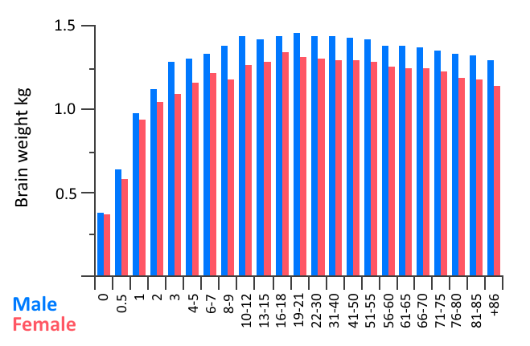
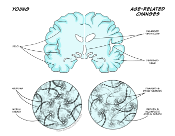

Ageing: a biological and psychological perspective
Learning Objectives
- To gain knowledge and understanding of the biological and cognitive changes that occur with ageing
- To understand methodological approaches to studying effects of ageing and strategies which may exist to promote healthy (cognitive ageing)
- To understand the subtle sensory changes which may occur with ageing.
Ageing can be defined as a gradual and continuous process of changes which are natural, inevitable and begin in early adulthood. Globally, the population is ageing, resulting in increasing numbers and proportion of people aged over 60 years. This is largely due to increased life expectancy and has ramifications in terms of health, social and political issues. The ageing process results in both physical and mental changes and although there may be some individual variability in the exact timing of such changes they are expected and unavoidable. Whilst ageing is primarily influenced by a genetic process it can also be impacted by various external factors including diet, exercise, stress, and smoking. As humans age their risk of developing certain disorders, such as dementia, increases, but these are not an inevitable consequence of ageing.
Healthy ageing is used to describe the avoidance or reduction of the undesired effects of ageing. Thus, its goals are to promote physical and mental health. For humans we can define our age by chronological age – how many years old a person is – and biological age, which refers to how old a person seems in terms of physiological function/presence of disease. All of the systems described elsewhere in this textbook will undergo changes with ageing and here we have focused on the main cognitive and sensory ones. Gerontology is the study of the processes of ageing and individuals across the life span. It encompasses study of the social, cultural, psychological, cognitive and biological aspects of ageing using distinct study designs, as described in Table 1, and specific methodological considerations (see insert box).
Table 6.1. Advantages and disadvantages of different methodological approaches to study ageing
|
Study type |
Description |
Advantages |
Disadvantages |
|
Longitudinal |
Data is collected from the same participants repeatedly at different points over time. |
Easier to control for cohort effects as only one group involved Requires (relatively) fewer participants |
Participant dropout rates increase over time. Resource intensive to conduct studies over long periods of time. Practice effects |
|
Cross-sectional |
Data is collected at a single time point for more than cohort. Cohorts are separated into age groups. |
Efficient – all data collection completed within a relatively short time frame, studies can be easily replicated
|
Difficult to match age groups. Differences due to cohort/historical differences in environment, economy etc |
|
Sequential longitudinal/Sequential cross sectional |
Two or more longitudinal, or cross sectional designs, separated by time
|
Repeating or replicating helps separate cohort effects from age effects. |
Complex to plan. Can be expensive |
|
Accelerated longitudinal |
A wide age range is recruited, split into groups and each group is followed for a few years. |
Longitudinal data is collected from the same participants over time. Cross-sectional data collection occurs within shorter time frame. |
Does not completely avoid cohort effects. |
| Credit: Claire Gibson |
Methodological considerations for ageing studies
There are a number of issues that are important to consider when studying ageing. Many of these occur because it is difficult, or impossible, to separate out the effects of ageing from the effects of living longer or being born at a different time;
- Older people will have experienced more life events. This will be true even if the chances of experiencing something are the same throughout life and not related to age. This means that older people are more likely to have experienced accidents, recovered from disease, or have an undiagnosed condition.
- People of different ages have lived at different times, and thus experienced different social, economic and public health factors. For example, rationing drastically changed the health of people who grew up in the middle of the twentieth century. It is likely that the Coronavirus pandemic will also have both direct and indirect effects in the longer term.
- The older people get, the more variable their paths through life become. It is often found that there is more variability in data from older people, however we also know that environmental factors have a strong effect on behavioural data.
- Non-psychological effects can directly impact on psychology. A good example of this is attention. Often as we age our range of movement becomes limited or slower. Since attention is often shifted by moving the head or eyes, reduction in the range of speed of motion will directly impact shifts of attention. Of course, not all attention shifts involve overt head or eye movements.
- Generalised effects such as slowing need to be controlled for or considered before proposing more complex or subtle effects. One way to do this is to use analysis techniques such as z-scores, ratios or Brindley plots to compare age groups and to ensure there is always a within age group baseline or control condition.
Biological basis of ageing
Ageing per se involves numerous physical, biochemical, vascular, and psychological changes which can be clearly identified in the brain. As we age our brains shrink in volume (Figure 6.9), with the frontal cortex area being the most affected, followed by the striatum, and including, to a lesser extent, areas such as the temporal lobe, cerebellar hemispheres, and hippocampus. Such shrinkage can affect both grey and white matter tissue, with some studies suggesting there may be differences between the sexes in terms of which brain areas show the highest percentage of shrinking with ageing. Magnetic Resonance Imaging (MRI) studies allow the study of specific areas of brain atrophy with age and show that decreases in both grey and white matter occur, albeit at different stages of the lifespan (for further information see Farokhian et al., 2018). Shrinkage in grey and white matter results in expansion of the brain’s ventricles in which cerebrospinal fluid circulates (Figure 6.10). The cerebral cortex also thins as we age and follows a similar pattern to that of brain volume loss in that it is more pronounced in the frontal lobes and parts of the temporal lobes.


Brain plasticity and changes to neural circuits
During normal ageing humans, and other animals, experience cognitive decline even in the absence of disease, as explained below. Some of this cognitive decline may be attributable to decreased, or at least disrupted, neuroplasticity. Neuroplasticity refers to the brain’s ability to adapt and modify its structure and functions in response to stimuli – it is an important process during development and thought to underlie learning and memory. In the young, the potential for brain plasticity is high as they undergo rapid learning and mapping of their environment. As we age, this capacity for learning, and therefore plasticity, declines, although it may be argued that we can retain some capacity for learning and plasticity through practice and training-based techniques (see insert box on ‘Strategies to promote healthy cognitive ageing’). Synaptic changes, thought to be a major contributor to age-related cognitive decline, involve dendritic alterations in that dendrites shrink, their branching becomes less complex, and they lose dendritic spines. All in all, this reduces the surface area of dendrites available to make synaptic connections with other neurons and therefore reduces the effectiveness, and plasticity, of neural circuitry and associated cognitive behaviours (for review see Petralia et al., 2014).
Cellular and physiological changes
Certain pathological features, in particular the occurrence of beta amyloid (Ab) plaques (sometimes referred to as senile plaques) and neurofibrillary tangles, are typically associated with dementia-causing diseases such as Alzheimer’s. Such features are described in detail in the Dementias chapter. However, it is important to note that they also occur with ageing, albeit in smaller amounts, and are more diffusely located compared to disease-pathology, but may also contribute to cell death and disruption in neuronal function seen in ageing.
Other physiological changes which occur with ageing, all of which have been suggested to result in cognitive impairment, include oxidative stress, inflammatory reactions and changes in the cerebral microvasculature.
Oxidative stress is the damage caused to cells by free radicals that are released during normal metabolic processes. However, compared to other tissues in the body, the brain is particularly sensitive to oxidative stress, which causes DNA damage and inhibits DNA repair processes. Such damage accumulates over the lifespan resulting in cellular dysfunction and death. Ageing is associated with a persistent level of systemic inflammation – this is characterised by increased concentration in the blood of pro-inflammatory cytokines and other chemokines which play a role in producing an inflammatory state, along with increased activation of microglia and macrophages. Microglia are the brain’s resident immune cells and are typically quiescent until activated by a foreign antigen. Upon activation, they produce pro-inflammatory cytokines to combat the infection, followed by anti-inflammatory cytokines to restore homeostasis. During ageing, there appears to be a chronic activation of microglia, inducing a constant state of neuroinflammation, which has been shown to be detrimental to cognitive function (Bettio et al., 2017; Di Benedetto et al., 2017). Finally, the ageing brain is commonly associated with decreased microvascular density, vessel thickening, increased vessel stiffness and increased vessel tortuosity (or distortion, twisting) which all result in compromised cerebral blood flow. Any such disruption to cerebral blood flow is likely to result in changes in cognitive function (e.g. see Ogoh, 2017).
Neurotransmitter changes
During ageing the brain also experiences changes in the levels of neurotransmitters and their receptors in different regions of the brain largely, but not exclusively, involving the dopamine, serotonin and glutamate systems. Neurochemical changes associated with ageing are important to understand as they may be relevant when considering therapeutic targets aimed at stabilising or enhancing those brain functions which typically deteriorate with age.
- Dopamine is a monoamine neurotransmitter which plays a neuromodulatory role in many CNS functions including executive function, motor control, motivation, arousal, reinforcement and reward. During ageing, dopamine levels have been reported to decline by about 10% per decade from early adulthood onwards and have been associated with declining motor and cognitive performance (Berry et al., 2016; Karrer et al., 2017). It may be that reduced levels of dopamine are caused by reductions in dopamine production, dopamine producing neurons and/or dopamine responsive synapses.
- Serotonin, also known as 5-hydroxytryptamine (5-HT) functions as both an inhibitory neurotransmitter and a hormone. It helps regulate mood, behaviour, sleep and memory all of which decline with age. Decreasing levels of different serotonin receptors and the serotonin transporter (5-HTT) have also been reported to occur with age. Areas particularly affected by loss of serotonin neurones include the frontal cortex, thalamus, midbrain, putamen and hippocampus (Wong et al., 1984).
- Glutamate is the primary excitatory neurotransmitter in the CNS synthesised by both neuronal and glial cells and high levels of glutamate, causing neurotoxicity, are implicated in a number of neurodegenerative disorders including multiple sclerosis, amyotrophic lateral sclerosis, Alzheimer’s disease and schizophrenia. Neurotransmission at glutamatergic synapses underlies a number of functions, such as motor behaviour, memory and emotion, which are affected during ageing. Levels of glutamate are reported to decline with ageing – older age participants have lower glutamate concentrations in the motor cortex along with the parietal grey matter, basal ganglia and the frontal white matter (Sailasuta et al., 2008).
Ageing and genetics
The genetics of human ageing are complex, multifaceted and are based on the assumption that duration of lifespan is, at least in part, genetically determined. This is supported by evidence that close family members of a centenarian tend to live longer and genetically identical twins have more similar lifespans than non-identical twins. The genetic theory of ageing is based on telomeres which are repeated segments of DNA (deoxyribonucleic acid) which are present at the ends of our chromosomes. The number of repeats in a telomere determines the maximum life span of a cell, since each time a cell divides, multiple repeats are lost. Once telomeres have been reduced to a certain size, the cell reaches a crisis point and is prevented from dividing further; thus the cell dies and cannot be replaced. Many believe this is an oversimplified explanation of the genetics of ageing and that actually a number of genetic factors, in combination with environmental factors, contribute to the ageing process (see reviews for further information – Melzer et al., 2020; Rodriguez-Rodoro et al., 2011).
Changes in cognitive systems
The changes in the biological systems and processes above translate into changes across all psychological processes. Some changes are found across all systems, but, as the sections below describe, changes with age are not uniform and there are specific changes in cognitive systems such as memory and attentional control and inhibition.
One of the strongest findings in ageing research is that there is a general slowing of processes (Salthouse, 1996). In virtually every task, older people respond more slowly, on average, than younger people, reflecting many of the biological changes described above. This is such a ubiquitous finding that it is important to control or account for slowing before considering any further theories of cognitive change. Furthermore, slowing can have more subtle effects than simple changes in reaction times. If a cognitive process requires more than one step, a delay in processing the first step can mean that the entire processing stream cannot proceed, or information cannot synchronise between different sub-processes (see ‘Methodological considerations’ text box).
Memory
Ageing appears to have greater effects in some types of memory more than others. Memory for personally experienced events (i.e. episodic memory) undergoes the clearest decline with age (Ronnlund et al., 2005). Within this, the decline after age 60 seems to be greater for recall tasks that require the participant to freely recall items, compared to tasks where they are asked to recognise whether the items were seen before (La Voie & Light, 1994). In a meta-analysis of studies where participants were asked whether they remembered the context or detail of a remembered event, Koen and Yonelinas (2014) found that there was a significant difference in participants’ recollection of context, but much less reduction in the ability to judge the familiarity of a prior occurrence.
Changes in other types of memory are less clear. Semantic memory, that is the memory for facts and information, shows less decline (Nyberg, L. et al., 2003), as does procedural memory and short-term memory (Nilsson, 2003). Working memory is distinct from short-term memory in that items in memory typically have to be processed or manipulated and this also declines with age (Park et al., 2002).
When considering these studies on memory it should always be remembered that there is considerable variability in memory performance, even in the domains where studies find consistent evidence of decline. Some of these differences are likely to be due to differences in the rate of loss of brain structure (sometimes termed ‘brain reserve’). Other variability is likely to be due to differences in how well people can cope or find alternative strategies to perform memory tasks. For example, it has been argued that some older people interpret the sense of familiarity or recognition differently to younger people and are more likely to infer they recalled the event. Higher levels of education earlier in life, as well as higher levels of physical or mental activity later in life, are associated with better memory. This variability illustrates the importance of considering participant sampling and cohort differences in ageing research.
Strategies to promote healthy cognitive ageing
Recently, application of behavioural interventions and non-pharmacological approaches has been demonstrated to improve some aspects of cognitive performance and promote healthy cognitive ageing. This is of particular relevance in older age when cognitive performance in particular domains declines. Such approaches, including cognitive training, neuromodulation and physical exercise are thought to improve cognitive health by rescuing brain networks that are particularly sensitive to ageing and/or augmenting the function of those networks which are relatively resilient to ageing. However, although such approaches may be supported by relatively extensive psychological studies, in terms of improvement or stabilisation of cognitive ability, evidence of underlying changes in biological structure/function, which is needed to support long term changes in cognitive behaviours, is more limited.
- Cognitive or ‘brain’ training – a program of regular mental activities believed to maintain or improve cognitive abilities. Based on the assumptions that practice improves performance, similar cognitive mechanisms underlie a variety of tasks and practicing one task will improve performance in closely related skills/tasks. Such training encompasses both cognitive stimulation and strategy-based interventions, are typically administered via a computer or other electronic medium and aim to restore or augment specific cognitive functions via challenging cognitive tasks that ideally adapt to an individual’s performance and become progressively more difficult. Recent meta-analyses of randomized controlled trials of cognitive training in healthy older adults and patients with mild cognitive impairment (MCI) report positive results on the cognitive functions targeted (Basak et al., 2020; Chiu et al., 2017).
- Neuromodulation – non-invasive brain stimulation techniques, such as transcranial direct current stimulation (tDCS) and repetitive transcranial magnetic stimulation (rTMS) have been shown to moderately improve cognitive functioning in older people (Huo et al., 2021) and improve cognitive performance in patients with MCI (Jiang et al., 2021). tDCS is approved as a safe, neuromodulatory technique which delivers a weak, electrical current via electrodes placed on the scalp to directly stimulate cortical targets. rTMS uses an electromagnetic coil to deliver a magnetic pulse that can be targeted at specific cortical regions to modulate neuronal activity and promote plasticity. Although some studies have combined cognitive training and neuromodulation approaches to enhance cognitive performance there is limited evidence of enhanced performance beyond that reported for either approach used in isolation.
- Physical activity – structured physical activity, in the form of moderate to vigorous aerobic exercise, has been reported to preserve and enhance cognitive functions in older adults. In particular, it moderately improves global cognitive function in older adults and improves attention, memory and executive function in patients with MCI (Erickson et al., 2019; Song et al., 2018). However, the mechanisms by which exercise has these effects are not fully understood and it is likely that the mechanisms of exercise may vary depending on individual factors such as age, affective mood and underlying health status.
Attentional control
One example of slowing is that the response to a cue becomes slower with age. The extent of the difference in response times between age groups differs depending on the type of cueing. A cue can be used to create an alerting response, which increases vigilance and task readiness. Older people are slower to show this alerting response (Festa-Martino et al, 2004). A cue can also symbolically direct attention to a specific location. One commonly used example of a symbolic cue is an arrow pointing to a particular location. Several studies have shown that older people are comparatively slower at responding to this type of cue (see Erel & Levy 2016 for an extensive and useful review). On the other hand, cues can also capture attention automatically, for example a loud noise or bright light. In contrast to the alerting and symbolic cues, numerous studies show that older people maintain an automatic orienting response (e.g. Folk & Hoyer, 1992). The attention effects above are likely to be due, in part, to other effects of ageing, such as sensory change (see section on Sensory change with age). For example, in the study by Folk and Hoyer (1992) older people were slower to respond to arrow cues only when they were small, not larger. This illustrates that the effects of changes in perception in ageing need to be considered when interpreting ageing effects.
Attentional processes are also often measured by visual search tasks. In these tasks participants search for a particular target amongst distracters. The target might be specified in advance (‘search for the red H’) or be defined by its relation to the distracters (‘find the odd one out’). The distracter can be similar to the target, typically leading to slower search (Duncan & Humphreys, 1989), or be sufficiently different that it ‘pops out’ (Treisman & Gelade, 1980). The distracters might be completely different to the target, allowing people to search based on a feature (e.g. a red H among blue As), or share some features with the target, which is usually termed conjunction search (e.g. a red H among red As and blue As). Visual search performance can be used to test multiple attentional mechanisms such as attentional shifting, attention to different features, response times and attentional strategies.
Older people show slower performance than younger people for conjunction search, compared to relatively preserved performance in feature-based search (Erel & Levy, 2016). This can be considered analogous to the differences in cueing above. The quick performance in feature search is often considered to be automatic and involuntary (Treisman & Gelade, 1980) and the slower performance in conjunction search to require more complex and voluntary processes. Older people have slower performance when they are required to make more attentional shifts to find the target (Trick & Enns, 1998). However, the role of declines in other processes such as discrimination of the target and distractors, inhibition and disengagement from each location and general slowing are also likely to play a part.
Inhibition
In contrast to directing attention towards a target, we also need to ignore, avoid or suppress irrelevant actions. In psychology this is often referred to as ‘inhibition’ and it can refer to the ability to ignore distracting items or colours on screen, or to resist the urge to make a specific repeated or strongly cued action. In ageing research, it is often measured by the Stroop task (where participants must name a word but ignore its ink colour) a go/no-go task (where participants must press a button in response to a target on most trials, and avoid that press on a few trials with a different stimulus) or flanker or distracter tasks (where participants’ performance with and without a distraction is measured).
Hasher and Zacks (1988) proposed that an age-related decline in inhibition underlies many differences in performance between older and younger people. Deficits can be found in many tasks which appear to be based on inhibition. Kramer et al. (2000) asked people to search for a target item among distracters. For example, older people’s reaction times were more affected (slowed) when there was a particularly salient (visible) distracter also on the screen. Older people also do not show as strong ‘negative priming’ as younger people. Negative priming is found when a distracter on a previous trial becomes the target on the current trial. This extended effect on performance is attributed to the distracter being inhibited so if inhibition is reduced then the negative priming effect is reduced.
On the other hand, some of the findings of inhibitory deficits can be attributed to other factors. For example, differences in Stroop task performance can be partly due to differences in the speed of processing of colours and words with age (Ben-David & Schneider, 2009), and inhibition of responses rather than the sensory profile of the distracter itself (Hirst et al., 2019). A meta-analysis by Rey-Mermet & Gade (2018) suggested that older people’s inhibitory deficit is likely to be limited to the inhibition of dominant responses.
Sensory changes with age
Most of us will have noticed someone using reading glasses, or turning up the TV to better hear the dialogue in a favourite film or drama. Although these are commonly assumed to be the main effects of ageing, the sensory changes with age are varied and some are quite subtle.
Vision
With age there are changes in the eye and in the visual pathways in the brain. A reduction in the amount that the eye focuses at near distances means that almost everyone will need reading glasses at some point. The lens also becomes thicker and yellows, reducing the amount of light entering the optic nerve and the brain. This affects how well we can see both colour and shape. For colour vision, the yellowing of the eye has a greater effect on the shorter, i.e blues and greens wavelengths of light (Ruddock, 1965, Said, 1959). So, for example, when matching red and green to appear the same brightness, more green has to be added for older, compared to younger, participants (Fiorentini et al., 1996).
For shape perception, the reduction in the amount of light passing through the eye reduces people’s ability to resolve fine detail (Weale, 1975; Kulikowski, 1971). Furthermore, neural loss and decay with age also contribute to declining visual ability, especially for determining the shape of objects. In general, for coarser patterns (lower spatial frequencies), the differences in performance between older and younger people are likely to be due to cortical changes. For finer detailed patterns (high spatial frequencies) the loss is more likely to be due to optical factors. Note that glasses correct for acuity, which is mostly driven by the ability to detect and discriminate between small and fine detailed patterns, but visual losses are far more wide-ranging and subtle than this.
Older people also have reduced ability to see movement and things that are moving. Older individuals tend to misjudge the speed of moving items (Snowden & Kavanagh, 2006) and the minimum speed required to discriminate direction of motion is higher for older, compared to younger, people (Wood & Bullmore, 1995). On the other hand, other studies have found that age-related deficits in motion processing are absent or specific to particular stimuli (Atchley & Andersen, 1998) and there are also reports of improvements in performance with age. For instance, older adults are quicker than younger adults to be able to discriminate the direction of large moving patterns (Betts et al., 2005; Hutchinson et al., 2011). This illustrates an important point about ageing and vision: many of the age-related deficits in motion processing are not due to deficits at the level of motion processing per se, but due to sensitivity deficits earlier in the processing stream. When presenting stimuli to older adults, it is worth noting that slight changes in details of the stimuli (for instance, their speed or contrast) might make dramatic changes in visibility for older, compared to younger, adults (Allen et al., 2010).
Hearing
As with vision, the effects of age on hearing include declines in the ear as well as in the brain. Also similar to vision there is a reduction in sensitivity to high frequencies. In hearing, high frequencies are perceived as high notes. The ear loses sensitivity with age and this loss starts with the detection of high tones and then goes on to affect detection of low tones (Peelle & Wingfield, 2016).
Although a loss of the ability to hear pure tones is very common in older people, one of the most commonly reported issues with hearing is a loss of ability to discriminate speech when it is in background noise (Moore et al., 2014). This causes trouble with hearing conversations in crowds, as well as dialogue in films and TV. The deficit is found both in subjective and objective measures of hearing in older people. Interestingly, there is an association between ability to hear speech in noise and cognitive decline (Dryden et al., 2017). One suggestion is that this reflects a general loss across all systems of the brain, but another interesting suggestion is that the effort and load of coping with declining sensory systems causes people to do worse on cognitive tasks.
Touch
Touch perception is perhaps the least well understood sense when it comes to ageing. We use our hands to sense texture and shape, either pressing or stroking a surface. Beyond this, our entire body is sensitive to touch to some degree, for example touch and pressure on the feet affect balance, and touch on our body tells us if we are comfortable. We know that ageing affects the condition of the skin as well as the ability to control our movements. Skin hydration, elasticity and compliance are all reduced with increased age (Zhang & Duan, 2018). Changing the skin will change how well it is able to sense differences in texture and shape. There are also changes in the areas of the brain that process touch, and in the pathways that connect the skin and the brain (McIntyre et al., 2021), both affecting basic tactile sensitivity (Bowden & McNulty, 2013; Goble et al.,1996).
Taste and smell
Taste and smell are critically important for quality of life and health and also show decline with ageing. Loss of appetite is a common issue for the old, and loss of smell and taste contribute to this. Loss of taste or smell is unpleasant at any age, making food unpalatable, but also making it difficult to identify when food is ‘off’ or when dirt is present. The change in smell and taste is gradual over the life span, but by the age of 65 there are measurable differences in the ability to detect flavours or smells (Stevens, 1998).
Key Takeaways
- Ageing causes natural and inevitable changes in both brain structure and function – however, we don’t yet fully understand the rate of change and the processes involved.
- Changes to the brain which may affect cognitive and sensory functions occur at molecular, synaptic and cellular levels – some of which, but not all, is driven by genetic factors.
- Understanding the mechanisms of ageing is important as this may identify approaches to try and alleviate age-related decline in cognition and sensory functions, along with identifying psychological and lifestyle factors which may help promote healthy cognitive ageing.
References and further reading
Allen, H. A., Hutchinson, C. V., Ledgeway, T., & Gayle, P. (2010). The role of contrast sensitivity in global motion processing deficits in the elderly. Journal of Vision, 10 (15). 1-10 https://doi.org/10.1167/10.10.15
Atchley, P., & Andersen, G. J. (1998). The effect of age, retinal eccentricity, and speed on the detection of optic flow components. Psychology and Aging, 13(2), 297-308. https://doi.org/10.1037/0882-7974.13.2.297
Basak, C., Qin, S., & O’Connell, M.A. (2020). Differential effects of cognitive training modules in healthy aging and mild cognitive impairment: A comprehensive meta-analysis of randomized controlled trials. Psychology and Aging, 35(2), 220–49. https://doi.org/10.1037/pag0000442
Ben-David, B. M. & Schneider, B. A. (2009). A sensory origin for color-word effects in aging: A meta-analysis. Aging Neuropsychology and Cognition, 16(5), 505-534. https://doi.org/10.1080/13825580902855862
Bettio, L.E.B., Rajendran, L., & Gil-Mohapel, J. (2017). The effects of aging in the hippocampus and cognitive decline. Neuroscience & Biobehavioral Reviews, 79, 66-86. https://doi.org/10.1016/j.neubiorev.2017.04.030
Betts, L. R., Taylor, C. P., Sekuler, A. B. & Bennett, P. J. (2005). Aging reduces center-surround antagonism in visual motion processing. Neuron, 45(3), 361-366. https://doi.org/10.1016/j.neuron.2004.12.041
Berry, A.S., Shah, V.D., Baker, S.L., Vogel, J.W., O’Neil, J.P., Janabi, M., Schwimmer, H.D., Shawn, M.M., & Jagust, W.J. (2016). Aging affects dopaminergic neural mechanisms of cognitive flexibility. The Journal of Neuroscience, 36(50), 12559-12569. https://doi.org/10.1523%2FJNEUROSCI.0626-16.2016
Bowden, J.L. & McNulty, P. A. (2013). Age-related changes in cutaneous sensation in the healthy human hand. Age, 35(4), 1077-1089. https://doi.org/10.1007%2Fs11357-012-9429-3
Chiu, H.-L., Chu, H., Tsai, J.-C., Liu, D., Chen, Y.-R., Yang, H.-L., & Chou, K.-R, (2017). The effect of cognitive-based training for the healthy older people: A meta-analysis of randomized controlled trials. PLoS ONE, 12(5), e0176742. https://doi.org/10.1371/journal.pone.0176742
Di Benedetto, S., Muller, L., Wenger, E., Duzel, S., & Pawelec, G. (2017). Contribution of neuroinflammation and immunity to brain aging and the mitigating effects of physical and cognitive interventions. Neuroscience and Biobehavioral Reviews, 75, 114-128. https://doi.org/10.1016/j.neubiorev.2017.01.044
Dryden, A., Allen, H. A., Henshaw, H., & Heinrich, A. (2017). The association between cognitive performance and speech-in-noise perception for adult listeners: A systematic literature review and meta-analysis. Trends in Hearing, 21. https://doi.org/10.1177/2331216517744675
Duncan, J., & Humphreys, G. W. (1989). Visual search and stimulus similarity. Psychological Review, 96(3), 433–458. https://doi.org/10.1037/0033-295X.96.3.433
Erel, H. & Levy, D. A. (2016) Orienting of visual attention in aging. Neuroscience and Biobehavioral Reviews, 69, 357-380. https://doi.org/10.1016/j.neubiorev.2016.08.010
Erickson, K.I., Hillman, C., Stillman, C.M., Ballard, R.M., Bloodgood, B., Conroy, D.E., Macko, R., Marquez, D., Petruzzello, S.J., & Powell, K.E. (2019). Physical activity, cognition, and brain outcomes: A review of the 2018 physical activity guidelines. Medicine & Science in Sports & Exercise, 51(6), 1242-1251. https://doi.org/10.1249/mss.0000000000001936
Farokhian, F., Yang, C., Beheshti, I., Matsuda, H., & Wu, S. (2018) Age-related gray and white matter changes in normal adult brains. Aging and disease, 8(6), 899-909. https://doi.org/10.14336%2FAD.2017.0502
Festa-Martino, E., Ott, B.R., & Heindel, W.C. (2004). Interactions between phasic alerting and spatial orienting: effects of normal aging and Alzheimer’s disease. Neuropsychology, 18(2), 258-68. https://doi.org/10.1037/0894-4105.18.2.258.
Fiorentini, A., Porciatti, V., Morrone, M. C. & Burr, D. C. (1996). Visual ageing: Unspecific decline of the responses to luminance and colour. Vision Research, 36(21), 3557-3566. https://doi.org/10.1016/0042-6989(96)00032-6
Folk, C.L., & Hoyer, W.J. (1992). Aging and shifts of visual spatial attention. Psychology and Aging, 7(3), 453–465. https://doi.org/10.1037//0882-7974.7.3.453
Goble, A.K., A.A. Collins, & R.W. Cholewiak, (1996). Vibrotactile threshold in young and old observers: The effects of spatial summation and the presence of a rigid surround. Journal of the Acoustical Society of America, 99(4), 2256-2269. https://doi.org/10.1121/1.415413
Hasher, L. & Zacks, R. T. (1979). Automatic and effortful processes in memory. Journal of Experimental Psychology-General, 108(3), 356-388. https://doi.org/10.1037/0096-3445.108.3.356
Hirst, R. J., Kicks, E. C., Allen, H. A. & Cragg, L. (2019). Cross-modal interference-control is reduced in childhood but maintained in aging: A cohort study of stimulus- and response-interference in cross-modal and unimodal stroop tasks. Journal of Experimental Psychology-Human Perception and Performance, 45(5), 553-572. https://doi.org/10.1037%2Fxhp0000608
Huo, L., Zhu, X., Zheng, Z., Ma, J., Ma, Z., Gui, W., & Li, J. (2021). Effects of transcranial direct current stimulation on episodic memory in older adults: a meta-analysis. Journal of Gerontology: Series B, 76(4), 692–702. https://doi.org/10.1093/geronb/gbz130
Hutchinson, C., Allen, H. & Ledgeway, T. (2011) When older is better: Superior global motion perception in the elderly. Perception, 40, 115-115.
Jiang, L., Cui, H., Zhang, C., Cao, X., Gu, N., Zhu, Y., Wang, J., Yang, Z., & Li, C. (2021). Repetitive transcranial magnetic stimulation for improving cognitive function in patients with mild cognitive impairment: A systematic review. Frontiers in Aging Neuroscience, 12. https://doi.org/10.3389/fnagi.2020.593000
Karrer, T.M., Josef, A.K., Mata, R., Morris, E.D., & Samanez-Larkin, G.R. (2017). Reduced dopamine receptors and transporters but not synthesis capacity in normal aging adults: A meta-analysis. Neurobiology of Aging, 57, 36-46. https://doi.org/10.1016/j.neurobiolaging.2017.05.006
Koen, J.D., & Yonelinas, A.P. (2014). The effects of healthy aging, amnestic mild cognitive impairment, and Alzheimer’s disease on recollection and familiarity: a meta-analytic review. Neuropsychology Review 24(3), 332-54. https://doi.org/10.1007/s11065-014-9266-5.
Kramer, A. F., Hahn, S., Irwin, D. E. & Theeuwes, J. (2000). Age differences in the control of looking behavior: Do you know where your eyes have been? Psychological Science, 11(3), 210-217. https://doi.org/10.1111/1467-9280.00243
Kulikowski, J. J. (1971). Some stimulus parameters affecting spatial and temporal resolution of the human eye. Vision Research, 11(1), 83-93. https://doi.org/10.1016/0042-6989(71)90206-9
La Voie, D., & Light, L. L. (1994). Adult age differences in repetition priming: A meta-analysis. Psychology and Aging, 9(4), 539–553. https://doi.org/10.1037/0882-7974.9.4.539
Liu, X. Z. & Yan, D. (2007). Ageing and hearing loss. Journal of Pathology, 211(2), 188-197. https://doi.org/10.1002/path.2102
McIntyre, S., Nagi, S.S., McGlone, F., & Olausson, H. (2021). The effects of ageing on tactile function in humans. Neuroscience, 464, 53-58. https://doi.org/10.1016/j.neuroscience.2021.02.015
Melzer, D., Pilling, L.C., & Ferrucci, L. (2020) The genetics of human ageing. Nature Reviews Genetics, 21, 88-101. https://doi.org/10.1038/s41576-019-0183-6
Moore, D. R., Edmundson-Jones, M., Dawes, P., Fortnum, H., McDormack, A., Pierzycki, R.H., & Munro, K.J. (2014). Relation between speech-in-noise threshold, hearing loss and cognition from 40-69 years of age. PLoS One, 9(9), e107720. https://doi.org/10.1371/journal.pone.0107720
Nilsson L-G. (2003) Memory function in normal aging. Acta Neurologica Scandinavica, 107, 7–13. https://doi.org/10.1034/j.1600-0404.107.s179.5.x
Nyberg, L., Maitland, S.B., Ronnlund, M., Backman, L., Dixon, R.A., Wahlin, A., Nilsson, L.G. (2003). Selective adult age differences in an age- invariant multifactor model of declarative memory. Psychology and Aging, 18(1), 149–160. https://doi.org/10.1037/0882-7974.18.1.149
Ogoh, S. (2017). Relationship between cognitive function and regulation of cerebral blood flow. Journal of Physiological Sciences, 67, 345-351. https://doi.org/10.1007/s12576-017-0525-0
Park, D. C., Lautenschlager, G. Hedden, T., & Davidson, N. S. (2002). Models of visuospatial and verbal memory across the adult life span. Psychology and Aging, 17(2), 299-320. https://doi.org/10.1037/0882-7974.17.2.299
Peelle, J. E. & Wingfield, A. (2016). The neural consequences of age-related hearing loss. Trends in Neurosciences, 39(7), 486-497. https://doi.org/10.1016/j.tins.2016.05.001
Petralia, R.S., Mattson, M.P., & Yao, P.J. (2014). Communication breakdown: the impact of ageing on synapse structure. Ageing Research Reviews, 14, 31-42. https://doi.org/10.1016/j.arr.2014.01.003
Rey-Mermet, A. & Gade, M. (2018). Inhibition in aging: What is preserved? What declines? A meta-analysis. Psychonomic Bulletin & Review, 25, 1695-1716. https://doi.org/10.3758/s13423-017-1384-7
Rodriguez-Rodero, S., Fernandez-Morera, J.L., Menendez-Torre, E., Calvanese, V., Fernandez, A.F., & Fraga, M.F. (2011). Aging genetics and aging. Aging and Disease, 2, 186-195. https://www.ncbi.nlm.nih.gov/pmc/articles/PMC3295054/
Ronnlund, M., Nyberg, L., Backman, L., & Nilsson, L.G. (2005). Stability, growth and decline in adult life span development of declarative memory: cross-sectional and longitudinal data from a population-based study. Psychology and Aging, 20(1), 3–18. https://doi.org/10.1037/0882-7974.20.1.3
Ruddock, K. H. (1965). The effect of age upon colour vision. II. Changes with age in light transmission of the ocular media. Vision Research, 5(1-3), 47-58. https://doi.org/10.1016/0042-6989(65)90074-X
Said, F. S. W. R. A. (1959).The variation with age of the spectral transmissivity of the living human crystalline lens. Gerontologia, 3, 213-231. https://doi.org/10.1159/000210900
Sailasuta, N., Ernst, T., & Chang, L. (2008). Regional variations and the effects of age and gender on glutamate concentrations in the human brain. Magnetic Resonance Imaging, 26(5), 667–75. https://doi.org/10.1016/j.mri.2007.06.007
Salthouse, T. A. (1996). The processing-speed theory of adult age differences in cognition. Psychological Review, 103(3), 403-428. https://doi.org/10.1037/0033-295X.103.3.403
Snowden, R. J. & Kavanagh, E. (2006). Motion perception in the ageing visual system: Minimum motion, motion coherence, and speed discrimination thresholds. Perception, 35(1), 9-24. https://doi.org/10.1068/p5399
Song, D., Yu, D.S.F., Li, P.W.C., & Lei, Y. (2018) The effectiveness of physical exercise on cognitive and psychological outcomes in individuals with mild cognitive impairment: A systematic review and meta-analysis. International Journal of Nursing Studies, 79, 155–164. https://doi.org/10.1016/j.ijnurstu.2018.01.002
Stevens, J. C., Cruz, L. A., Marks, L. E. & Lakatos, S. (1998). A multimodal assessment of sensory thresholds in aging. Journals of Gerontology Series B-Psychological Sciences and Social Sciences, 53(4), 263-272. https://doi.org/10.1093/geronb/53b.4.p263
Treisman, A. M. & Gelade, G. (1980). A feature-integration theory of attention. Cognitive Psychology, 12(1), 97-136. https://doi.org/10.1016/0010-0285(80)90005-5
Trick, L.M., & Enns, J.T. (1998). Lifespan changes in attention: The visual search task. Cognitive Development. 13(3), 369–386. https://doi.org/10.1016/S0885-2014(98)90016-8
Weale, R. A. (1975) Senile changes in visual acuity. Transaction of the Ophthalmological Society, 95(1), 36-38.
Wong, D. F., Wagner, H.N., Dannals, R.F., Links, J.M., Frost, J.J., Ravert, H.T., Wilson, A.A., Rosenbaum, A.E., Gjedde, A., Douglass, K.H., Petronis, J.D., Folstein, M.F., Toung, J.K.T., Bums, H.D., & Kuhar, M.J. (1984). Effects of age on dopamine and serotonin receptors measured by positron tomography in the living human brain. Science, 226(4681), 1393-1396. https://doi.org/10.1126/science.6334363
Wood, J. M. & Bullmore, M. A. (1995). Changes in the lower displacement limit for motion with age. Ophthalmic and Physiological Optics, 15(1), 31-36. https://doi.org/10.1046/j.1475-1313.1995.9592789.x
Zhang, S.B. & Duan, E. K. (2018). Fighting against skin aging: The way from bench to bedside. Cell Transplantation, 27(5), 729-738. https://doi.org/10.1177/0963689717725755